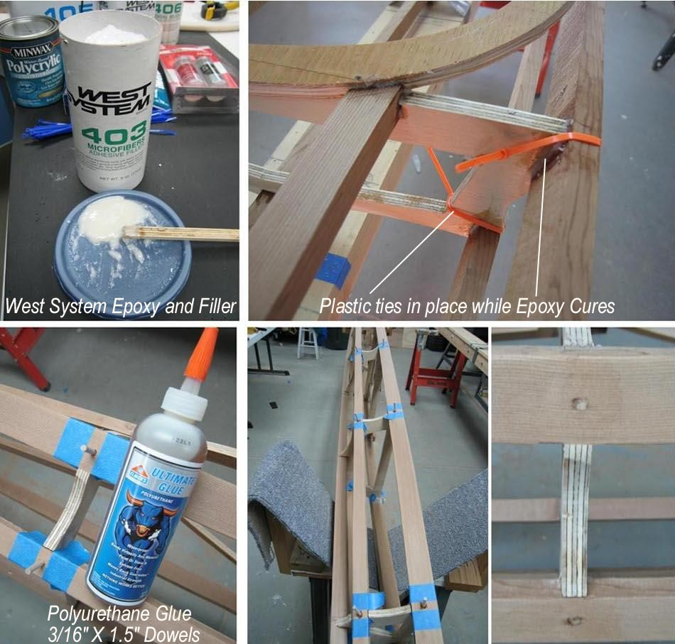

| Sea Rider ( Wood Frame ) | Menu Last Page Next Page |
|

The wood Sea Rider is constructed using Epoxy Resin ( West System 105) and filler ( West System 403 and 406). In addition to thickening the epoxy for easier application, the filler has excellent gap filling properties. Plastic ties are used to hold the stringers tightly in place while the Epoxy cures. After curing overnight, each stringer to cross section connection is drilled and 3/16in dowels are driven / glued ( Polyurethane) into place.
|
|